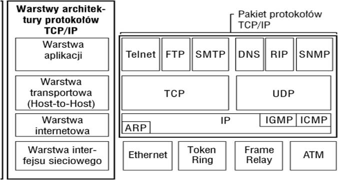

Wprowadzenie
Model TCP/IP (ang. Transmission Control Protocol/Internet Protocol)-teoretyczny model warstwowej struktury protokołów komunikacyjnych. Model TCP/IP został stworzony w latach 70. XX wieku w DARPA, aby pomóc w tworzeniu odpornych na atak sieci komputerowych. Potem stał sie podstawą struktury Internetu.
Podstawowym założeniem modelu TPC/IP jest podział całego zagadnienia komunikacji sieciowej na szereg współpracujących ze sobą warstw (ang. layers). Każda z nich może być tworzona przez programistów zupełnie niezależnie, jeżeli narzucimy pewne protokoły według których wymieniają się one informacjami. Założenia modelu TPC/IP są pod względem organizacji warst zbliżone do modelu OSI. Jednak liczba warst jest mniejsza i bardziej odzwierciedla prawdziwą strukturę Internetu. Model TPC/IP składa się z czterech warstw.
Dla internetu sformułowano uproszczony Model TCP/IP, który tylko 4 warstwy.
Warstwa procesowa czy warstwa aplikacji (ang. process layer) to najwyższy poziom, w którym pracują użyteczne dla człowieka aplikacje takie jak np. serwer WWW czy przeglądarka internetowa. Obejmuje ona zestaw gotowych protokołów, które aplikacje wykorzystują do przesyłania różnego typu informacji w sieci. Wykorzystywane protokoły to m.in.:HTTP, Telnet, FTP, TFTP, SNMP,X Window.
Warstwa transportowa (ang.host-to-host layer) gwarantuje pewność przesyłania danych oraz kieruje właściwe informacje do odpowiednich aplikacji. Opiera sie na wykorzystaniu portów określonych dla każdego połączenia. W jednym komputerze może istnieć wiele aplikacji wymieniających dane z tym samym komputerem w sieci i nie nastąpi wymieszanie się przesylanych przez nie danych. To właściwie ta warstwa nawiązuje i zrywa połączenia między komputerami i zapewnia pewność transmisji.
Warstwa internetu lub warstwa protokołu internetowego (ang.internet protocol layer) to sedno działania Internetu. W tej warstwie przetwarzane są datagramy posiadające adresy IP. Ustalana jest odpowiednia droga do docelowego komputera w sieci. Niektóre urządzenia sieciowe posiadają te warstwę jako najwyższą. Są to routery, które zajmują się kierowaniem ruchu w Internecie, bo znają topologię sieci. Proces odnajdywania przez routery właściwej drogi określa się jako trasowanie.
Warstwa dostępu do sieci lub farstwa fizyczna (ang.network access layer) jest najniższą warstwą i to ona zajmuje si e przekazywaniem danych przez fizyczne połączenia miedzy urządzeniami sieciowymi. Najczęściej są to karty sieciowe lub modemy. Dodatkowo warstwa ta jest czasami wyposażona w protokoły do dynamicznego określenia adresów IP.
W dzisiejszych czasach, praktycznie każdy system operacyjny posiada domyślnie zainstalowane protokoły TCP/IP.
Istnieje także Lightweight TCP/IP, szerzej znany jako darmowy stos TCP/IP dla systemów wbudowanych, czyli będących integralną częścią obsługiwanego przez nie sprzętu-jest to stos protokołów dla systemów obsługujących zarówno amatorskie jak i zaawansowane urządzenia, często budowane z wykorzystaniem programowalnych układów FPGA (np. sprzętowe serwery WWW,FTP). Istnieją także proste stosy TCP/IP realizowane całkowicie sprzętowo.
Schemat
Przejdź do strony Model TCP/IP | Model ISO/OSI